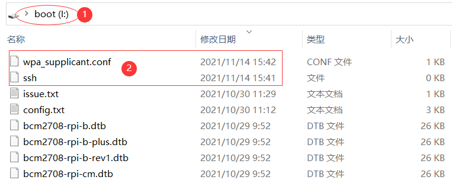
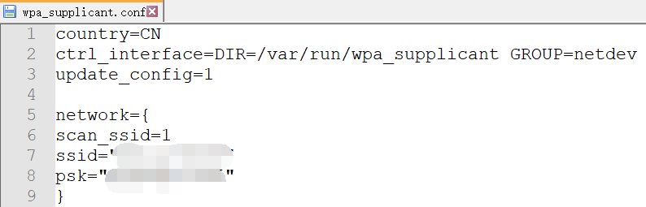
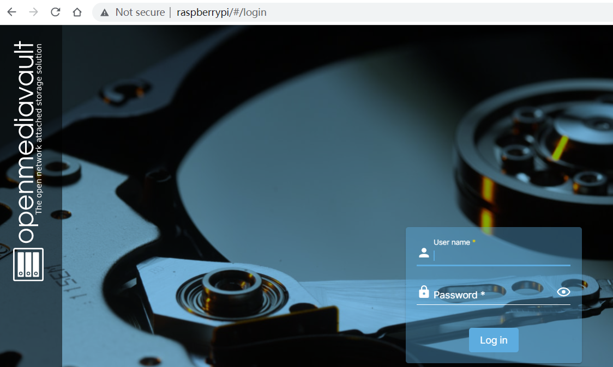
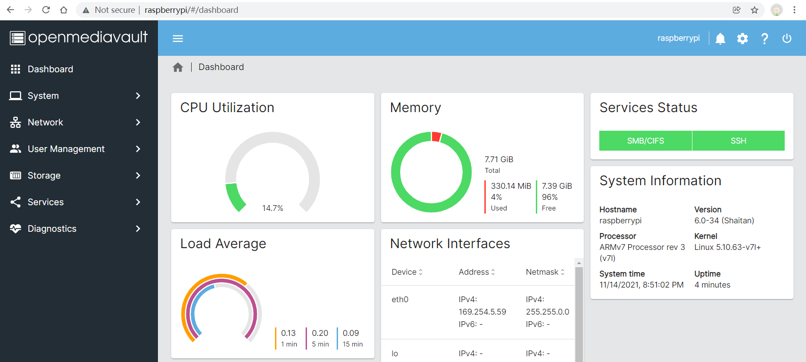
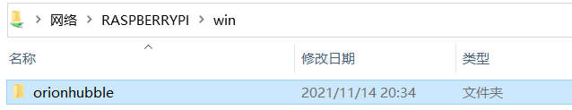

Build NAS with Raspberry Pi

I. Install Raspberry Pi OS
Install Raspberry Pi OS using Raspberry Pi Imager
Raspberry Pi Operating system images, Raspberry Pi OS Lite.
II. Modify Pi OS SD Card Content(Optional)
Connect via SSH to a Raspberry Pi, without desktop monitor.
- touch ssh file in boot volume.
- touch and config wifi file wpa_supplicant.conf in boot volume.
1
2
3
4
5
6
7
8
9country=CN
ctrl_interface=DIR=/var/run/wpa_supplicant GROUP=netdev
update_config=1
network={
scan_ssid=1
ssid="your_wifi_ssid"
psk="your_wifi_password"
} - Added files in boot volume
 - Content of wpa_supplicant.conf

III. Boot Pi OS, and Install Open Media Vault
Raspberry Pi OS default user pi, and password raspberry.
- Update Pi OS
1
2
3$ sudo apt-get update
$ sudo apt-get upgrade
$ sudo reboot - Download and Install Open Media Vault
1
2
3
4
5$ sudo apt install git
$ git clone https://github.com/OpenMediaVault-Plugin-Developers/installScript.git
$ cd installScript/
$ sudo ./install
$ sudo ./install --fix-missing
IV. Access Open Media Vault
Open a browser and enter the Raspberry Pi IP address. The default credentials are user: admin, pass: openmediavault.
- Open Media Vault Login Console
 - Open Media Vault Management Console

V. Share FileSystem to Windows 10
- Open Media Vault Config
- Storage -> File Systems -> Create & Mount filesytem, Apply the changes
- User Management -> Settings -> Create user win
- Storage -> Shared Folders -> Create folder win, and set user win with Read/Write Privileges
- Services -> SMB/CIFS -> Settings -> turn on Enabled, Workgroup name should be same with your Windows
- Services -> SMB/CIFS -> Shares -> Create, Apply the changes
- Windows 10 Config
- Network & Internet -> Change advanced sharing options -> Turn on Network Discovery and File Sharing
- Credential Manager -> Add a Windows Credential, same with the created OMV user name and password
- Access shared folder with OMV Server hostname
WIN+R: \\hostname, try to create a new file or folder in the shared folder.

VI. Share FileSystem to MacOS(Not Completed)
…